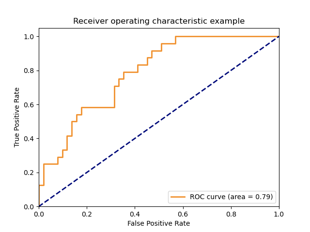
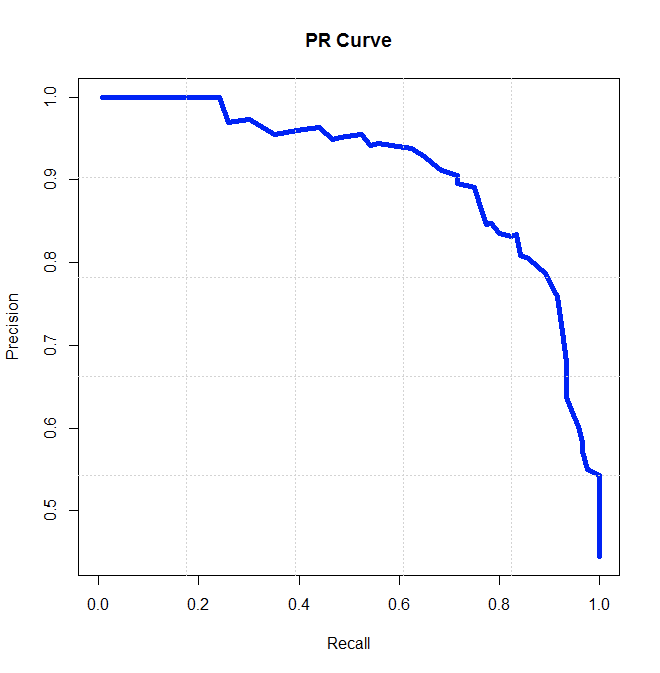

本文旨在从所有教科书都讲到的AUC基本概念为起点，逐步带领大家进入AUC背后更为广阔、神奇的世界。
一、什么是AUC
AUC的全称为Area Under the Curve，即曲线下的面积。这里的曲线指的是什么曲线？有两种类型：ROC曲线和PR曲线。所以，AUC也会有两种类型：ROCAUC及 PRAUC，分别对应ROC曲线下的面积以及PR曲线的的面积。
二、ROC曲线及PR曲线
在二分类问题中，模型输出得分$S$后（这里的得分指的是属于正例的概率值，即经过sigmoid函数归一化到[0,1]内的分数），需要设置一个阈值$T$来决定属于正例还是负例。若$S>T$被判为正例，反之则被判为负例。
最终的预测结果，肯定会出现分类错误的情况。根据样本label以及最终模型预测的结果，可以将最终分类结果分为4种情况：
a. label为正，模型预测为正： 真正例 TP(True Positive)
b. label为正，模型预测为负： 假负例 FN(False Negative)
c. label为负，模型预测为正： 假正例 FP(False Positive)
d. label为负，模型预测为负： 真负例 TN(True Negative)
按照以下规则会便于分辨与记忆：正负例指模型最终预测结果，真假指模型是否预测正确。 所以，举个例子，当计算数据集中正样本的个数为多少时，只需要计算模型预测为正且预测正确的样本个数+模型预测为负且模型预测错误的样本个数，按照上述的记忆方法，即$TP+FN$。
| Label=1 | Label=0 | |
|---|---|---|
| Pred=1 | TP | FP |
| Pred=0 | FN |
请大家牢记住上述四种情况，ROC曲线和PR曲线与其息息相关。
ROC和PR曲线到底与$TP、FP、FN、TN$有什么关系呢？ ROC曲线和PR曲线的差别就在于两者的横纵坐标轴的含义不一样。 ROC曲线的X轴为FPR(False Positive Rate)，Y轴为TPR(True Positive Rate)。而PR曲线的X轴为Recall，Y轴为Precision。
FPR: 假正例比例。问题是假正例与什么的比例？因为假正例其实是真实的负例的一部分，所以，这里应该是假正例与所有真实负例的比值。于是得到：$FPR=\frac{FP}{TN+FP}$
TPR: 真正例比例。这里是真正例与所有真实正例的比值。于是得到：$TPR=\frac{TP}{TP+FN}$
Recall: 召回率。召回指的是模型预测的真正例占所有正例的比值，即$Recall=\frac{TP}{TP+FN}$
Precision: 准确率。准确率指的是模型预测的真正例占模型预测所有正例的比值，即$Precision=\frac{TP}{TP+FP}$
总结： 召回率和准确率可以通俗的来理解：召回率是模型可以从所有的正例中准确的捞出正例样本的能力，准确率是描述模型准确预测正例的能力。从公式可以看出，真正例比例与召回率的形式完全一样，即$TPR=Recall$。而关于FPR，1-FPR的含义其实就是负例样本的召回率，这点可以想想为什么吗？
ROC曲线及PR曲线的横纵坐标定义好后，曲线的绘制过程一致：将判断正负例的阈值$T$由模型预测得分最小值$S_{min}$至模型预测得分最大值$S_{max}$进行遍历。对于每个时刻的阈值$T_{i}$，计算X轴及Y轴对应的数值，作为这一时刻的坐标。当遍历过程完成后，就会得到ROC曲线或者PR曲线了。


三、ROC曲线与PR曲线的对比
从两图中的对比可以很明显的看出，ROC曲线朝左上角“凸起”，而PR曲线是朝右上角“凸起”。如何记忆这一特征呢？只需将判断正负例的阈值$T$分别置为模型预测得分最小值$S_{min}$及模型预测得分最大值$S_{max}$，计算对应的TPR、FPR及Recall、Precision即可。
当$T=S_{min}$，所有样本均被判为正例，于是有：
$FPR = \frac{FP}{TN+FP}=\frac{FP}{0+FP}=1$
$TPR = \frac{TP}{TP+FN}=\frac{TP}{TP+0}=1$
$Recall = \frac{TP}{TP+FN}=TPR=1$
$Precision = \frac{TP}{TP+FP}$
当$T=S_{max}$，所有样本均被判为负例，于是有：
$FPR = \frac{FP}{TN+FP}=\frac{0}{TN+0}=0$
$TPR = \frac{TP}{TP+FN}=\frac{0}{0+FN}=0$
$Recall = \frac{TP}{TP+FN}=TPR=0$
$Precision = \frac{TP}{TP+FP}=\frac{0}{0}$
根据上述计算过程，可以看到ROC曲线的两个极值点坐标为(1,1)及(0,0)。当所有样本完全分类正确时，$FPR=\frac{FP}{TN+FP}=\frac{0}{TN}=0$，$TPR = \frac{TP}{TP+FN}=\frac{TP}{TP+0}=1$，即模型完美分类样本时，对应ROC曲线的点在(0,1)。但是模型总会有误差，所以不可能达到(0,1)这个点，只能尽力向(0,1)点靠拢。通过这样简单的分析有助于帮你记忆ROC曲线越往左上方靠分类效果越好这个性质。
而PR曲线就要我们好好来研究一下了。PR的两个极值点为A(1, $\frac{TP}{TP+FP}$ (样本全判正))及B(0, $\frac{0}{0}$(样本全判负))。对于A点，当样本全判正时，$\frac{TP}{TP+FP}$其实表示数据集中真实正样本的比例$p$。 所以，A点可以表示为(1,p)。对于B点，当样本全判负时，Precision会面临一个问题：除0——此时TP及FP均为0。这在数学上是没有意义的，所以通常利用上限1表示PR曲线中Recall=0时的Precision。 上限为1又是如何推算出来的呢？个人理解，考虑这样一个场景，当模型判正阈值$T$很高，高到只有一个样本被判为正例，且该正例是真正例，此时的$Precision=\frac{TP}{TP+FP}=\frac{1}{1+0}=1$。当模型完美预测所有样本的结果时，这时的Precision及Recall均为1，所以PR曲线越往右上角凸起分类结果越好。这样，大家便可以直观上理解ROC曲线以及PR曲线了。
PR曲线以及ROC曲线之间到底有什么关系呢？推荐大家看一篇论文《 The Relationship Between Precision-Recall and ROC Curves》。这篇论文深入的讨论了PR曲线与ROC曲线之间的爱恨情仇，这里就略微总结一下：
- 对于一个给定正负样本的数据集，PR曲线与ROC曲线的点是一一对应的；
- 在正负样本不均衡的场景下，PR曲线更能反应分类的性能；
- 当且仅当曲线A比曲线B在PR空间中更占优势时，曲线A比曲线B才会在ROC空间更有优势；
具体的证明过程暂且不表，感兴趣的同学可以阅读下原论文。也可以直接记住结论。
三、AUC评价指标
原始AUC值的适用场景为二分类场景。一般在各种文章或者日常交流中，大家都会经常听到离线指标AUC是多少多少，这里的AUC普遍指ROCAUC指标。所以，我们先从ROCAUC谈起。上文说过，ROC曲线越向左上角偏分类结果越好，即ROC曲线的AUC值越大越好。当AUC=0.5时，分类效果等于随机猜测，AUC越接近于1，分类效果越好。不过，如果AUC值过大的话，要十分警惕模型发生过拟合。
以上，都是从理论层面在讨论ROC曲线。现在考虑这样一个问题：给定一个数据集，包括真实label以及模型预测结果，我们对整个数据集进行随机均匀负采样，负采样前后的AUC会变化吗？答案是不会。其实ROCAUC值是有实际意义的：根据真实label随机取正负样本对，模型对正例的预测分数比对负例的预测分数高的概率。 举个例子吧，假设有以下数据集：
| 样本id | 真实label | 模型分数 |
|---|---|---|
| A | 0 | 0.2 |
| 0 | 0.8 | |
| 1 | 0.5 | |
| D | 1 | 0.6 |
那么所有的正负样本对可以列出来：(A,C),(A,D),(B,C),(B,D)。其中，(A,C),(A,D)两对中正例的模型分比负例的模型分高。所以，该数据集的AUC值为 2/4=0.5。回过头来看上面这个问题，假设数据集中有N个正样本，有M个负样本，故正负样本对的个数为NM。不妨假设其中有x对正样本模型分是比负样本模型分大的。所以，负采样前的原始AUC分为$\frac{x}{NM}$。好，下面我们以r(r<1)的比例进行负采样，就是将负样本由M个采样至rM个。正负样本对的个数变成了$NrM$。下面的这点对该问题的理解非常重要：因为采样是均匀的，所以对于某个正样本，其对应的模型分为x，模型分大于x的负例及模型分小于x的负例也应该是以r的比例被采样的。这就导致采样后正样本模型分比负样本模型分大的正负样本对也同时由r变为rx。 采样后的AUC值为$\frac{rx}{r*NM}=\frac{x}{NM}$。可以看到采样前后的AUC值基本是不变的。
从另一个角度来说，负采样后的AUC是原始数据集的无偏估计。
现在给定一个数据集，包含label以及模型预测分，如何计算ROCAUC？
遍历所有正负样本pair，假定有M个。统计其中正样本模型分>负样本模型分的pair数，假定有N个。那么最终的AUC可以通过$\frac{N}{M}$计算得出。
利用公式求解。原理与1完全一样，只是用公式表达出来。乍一看可能会有点复杂，但是经过拆解后就会发现其实很简单：
假设有M个正样本，N个负样本，将样本根据模型分大小从小到大排列。
$AUC=\frac{\sum_{i=1}^{M}(RANK(p_i)-i)}{MN}$，$p_i$表示第i个正样本，$RANK(p_i)$表示第i个正样本的排名。
提示：举个简短的例子代入到公式中会更加直观。
四、gAUC值
gAUC=group AUC。这个group一词就表达了gAUC的精华所在。AUC表示是所有样本间的相互比较。而gAUC引入了组（group）的概念，组内相互比较，最后再通过组加权的方式算出最终的gAUC值。
那么为什么要引入group的概念呢？思考下面这个场景就明白了：在搜索排序场景，一个query对应一个排序列表。数据集中肯定不止一个query，那么不同query之间模型预测分数的值之间相互比较有意义吗？没有意义！
搜三亚出来的产品A的得分与搜广州出来的产品B的得分当然没有可比性。但是搜三亚出来的产品A的得分与搜三亚出来的产品B的得分这就有比较意义了。
所以gAUC首先计算各group内的AUC，最终根据各group的权重进行加权求和。公式如下：
$gAUC=\frac{\sum_{i\in N}{w_i * AUC_i}}{\sum_{i \in N }{w_i}}$
这里的group权重可以根据不同的策略制定。
结尾
个人水平有限，小伙伴有什么补充或者好的建议，欢迎评论，一起探讨！